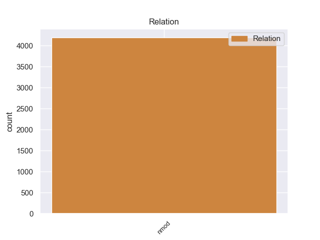
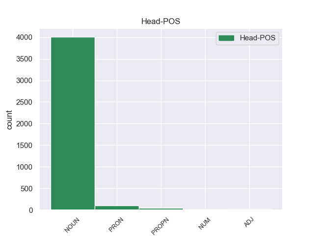
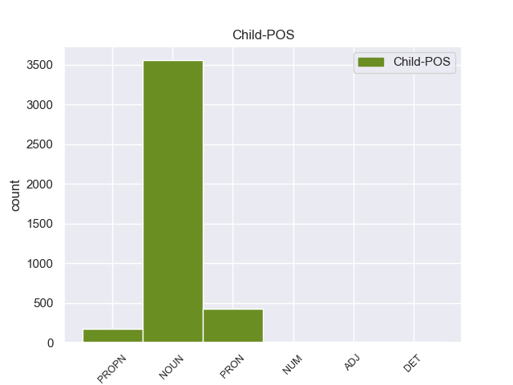

Distribution of features within this leaf



Agreement Rules sorted by frequency.
- When the dependent token is the nominal modifier(nmod) of the head token, and the head token is NOUN and the dependent token is NOUN.
1 Ο _ _ _ _ 0 _ _ _
2 λόγος _ _ _ _ 0 _ _ _
3 που _ _ _ _ 0 _ _ _
4 διαθέτουμε _ _ _ _ 0 _ _ _
5 κανόνες _ _ _ _ 0 _ _ _
6 για _ _ _ _ 0 _ _ _
7 τις _ _ _ _ 0 _ _ _
8 κρατικές _ _ _ _ 0 _ _ _
9 ενισχύσεις _ _ _ _ 0 _ _ _
10 είναι _ _ _ _ 0 _ _ _
11 η _ _ _ _ 0 _ _ _
12 διασφάλιση _ _ _ _ 0 _ _ _
13 της _ _ _ _ 0 _ _ _
14 ορθής _ _ _ _ 0 _ _ _
15 λειτουργίας λειτουργία NOUN NOUN Case=Gen|Gender=Fem|Number=Sing 0 _ _ _
16 της _ _ _ _ 0 _ _ _
17 κοινής _ _ _ _ 0 _ _ _
18 αγοράς αγορά NOUN NOUN Case=Gen|Gender=Fem|Number=Sing 15 nmod _ _
19 και _ _ _ _ 0 _ _ _
20 πρέπει _ _ _ _ 0 _ _ _
21 να _ _ _ _ 0 _ _ _
22 καταργήσουμε _ _ _ _ 0 _ _ _
23 τους _ _ _ _ 0 _ _ _
24 φραγμούς _ _ _ _ 0 _ _ _
25 σ _ _ _ _ 0 _ _ _
26 τον _ _ _ _ 0 _ _ _
27 ανταγωνισμό _ _ _ _ 0 _ _ _
28 και _ _ _ _ 0 _ _ _
29 σ _ _ _ _ 0 _ _ _
30 το _ _ _ _ 0 _ _ _
31 ελεύθερο _ _ _ _ 0 _ _ _
32 εμπόριο _ _ _ _ 0 _ _ _
33 προκειμένου _ _ _ _ 0 _ _ _
34 να _ _ _ _ 0 _ _ _
35 επιτρέψουμε _ _ _ _ 0 _ _ _
36 σ _ _ _ _ 0 _ _ _
37 την _ _ _ _ 0 _ _ _
38 Επιτροπή _ _ _ _ 0 _ _ _
39 να _ _ _ _ 0 _ _ _
40 ασκεί _ _ _ _ 0 _ _ _
41 αστυνόμευση _ _ _ _ 0 _ _ _
42 , _ _ _ _ 0 _ _ _
43 ενώ _ _ _ _ 0 _ _ _
44 το _ _ _ _ 0 _ _ _
45 Συμβούλιο _ _ _ _ 0 _ _ _
46 θα _ _ _ _ 0 _ _ _
47 έπρεπε _ _ _ _ 0 _ _ _
48 πραγματικά _ _ _ _ 0 _ _ _
49 να _ _ _ _ 0 _ _ _
50 ντρέπεται _ _ _ _ 0 _ _ _
51 που _ _ _ _ 0 _ _ _
52 προκαλεί _ _ _ _ 0 _ _ _
53 την _ _ _ _ 0 _ _ _
54 Επιτροπή _ _ _ _ 0 _ _ _
55 σε _ _ _ _ 0 _ _ _
56 αυτόν _ _ _ _ 0 _ _ _
57 τον _ _ _ _ 0 _ _ _
58 συγκεκριμένο _ _ _ _ 0 _ _ _
59 τομέα _ _ _ _ 0 _ _ _
60 . _ _ _ _ 0 _ _ _
1 Η _ _ _ _ 0 _ _ _
2 ενέργεια _ _ _ _ 0 _ _ _
3 αυτή _ _ _ _ 0 _ _ _
4 καθυστερεί _ _ _ _ 0 _ _ _
5 την _ _ _ _ 0 _ _ _
6 αύξηση _ _ _ _ 0 _ _ _
7 του _ _ _ _ 0 _ _ _
8 ορίου _ _ _ _ 0 _ _ _
9 χρέους _ _ _ _ 0 _ _ _
10 των _ _ _ _ 0 _ _ _
11 ΗΠΑ _ _ _ _ 0 _ _ _
12 και _ _ _ _ 0 _ _ _
13 απομακρύνει _ _ _ _ 0 _ _ _
14 την _ _ _ _ 0 _ _ _
15 απειλή _ _ _ _ 0 _ _ _
16 να _ _ _ _ 0 _ _ _
17 δηλώσει _ _ _ _ 0 _ _ _
18 η _ _ _ _ 0 _ _ _
19 Ουάσιγκτον _ _ _ _ 0 _ _ _
20 αδυναμία _ _ _ _ 0 _ _ _
21 αποπληρωμής _ _ _ _ 0 _ _ _
22 των _ _ _ _ 0 _ _ _
23 χρεών χρέος NOUN NOUN Case=Gen|Gender=Neut|Number=Plur 0 _ _ _
24 της μου PRON PRON Case=Gen|Gender=Fem|Number=Sing|Person=3|Poss=Yes|PronType=Prs 23 nmod _ SpaceAfter=No
25 , _ _ _ _ 0 _ _ _
26 γεγονός _ _ _ _ 0 _ _ _
27 που _ _ _ _ 0 _ _ _
28 θα _ _ _ _ 0 _ _ _
29 έβλαπτε _ _ _ _ 0 _ _ _
30 την _ _ _ _ 0 _ _ _
31 οικονομία _ _ _ _ 0 _ _ _
32 . _ _ _ _ 0 _ _ _
1 Αυτός _ _ _ _ 0 _ _ _
2 ο _ _ _ _ 0 _ _ _
3 χώρος _ _ _ _ 0 _ _ _
4 που _ _ _ _ 0 _ _ _
5 αποτελεί _ _ _ _ 0 _ _ _
6 μια _ _ _ _ 0 _ _ _
7 πλούσια _ _ _ _ 0 _ _ _
8 μορφολογία _ _ _ _ 0 _ _ _
9 εδάφους _ _ _ _ 0 _ _ _
10 με _ _ _ _ 0 _ _ _
11 λίμνες _ _ _ _ 0 _ _ _
12 , _ _ _ _ 0 _ _ _
13 βουνά _ _ _ _ 0 _ _ _
14 και _ _ _ _ 0 _ _ _
15 ποταμούς _ _ _ _ 0 _ _ _
16 διασχίζονταν _ _ _ _ 0 _ _ _
17 από _ _ _ _ 0 _ _ _
18 την _ _ _ _ 0 _ _ _
19 αρχαιότητα _ _ _ _ 0 _ _ _
20 από _ _ _ _ 0 _ _ _
21 τρεις _ _ _ _ 0 _ _ _
22 κύριες _ _ _ _ 0 _ _ _
23 οδούς _ _ _ _ 0 _ _ _
24 , _ _ _ _ 0 _ _ _
25 τις _ _ _ _ 0 _ _ _
26 κοιλάδες _ _ _ _ 0 _ _ _
27 του _ _ _ _ 0 _ _ _
28 Αξιού _ _ _ _ 0 _ _ _
29 και _ _ _ _ 0 _ _ _
30 του _ _ _ _ 0 _ _ _
31 Στρυμόνα _ _ _ _ 0 _ _ _
32 που _ _ _ _ 0 _ _ _
33 συνέδεαν _ _ _ _ 0 _ _ _
34 την _ _ _ _ 0 _ _ _
35 κεντρική _ _ _ _ 0 _ _ _
36 Ευρώπη _ _ _ _ 0 _ _ _
37 με _ _ _ _ 0 _ _ _
38 το _ _ _ _ 0 _ _ _
39 Αιγαίο _ _ _ _ 0 _ _ _
40 και _ _ _ _ 0 _ _ _
41 τη _ _ _ _ 0 _ _ _
42 ρωμαϊκή _ _ _ _ 0 _ _ _
43 Εγναντία Εγναντία PROPN PROPN Case=Acc|Gender=Fem|Number=Sing 44 nmod _ _
44 οδό οδός NOUN NOUN Case=Acc|Gender=Fem|Number=Sing 0 _ _ _
45 που _ _ _ _ 0 _ _ _
46 διερχόμενη _ _ _ _ 0 _ _ _
47 από _ _ _ _ 0 _ _ _
48 το _ _ _ _ 0 _ _ _
49 Μοναστήρι _ _ _ _ 0 _ _ _
50 και _ _ _ _ 0 _ _ _
51 τη _ _ _ _ 0 _ _ _
52 Θεσσαλονίκη _ _ _ _ 0 _ _ _
53 έφθανε _ _ _ _ 0 _ _ _
54 σ _ _ _ _ 0 _ _ _
55 τη _ _ _ _ 0 _ _ _
56 Κωνσταντινούπολη _ _ _ _ 0 _ _ _
57 . _ _ _ _ 0 _ _ _
1 Οι _ _ _ _ 0 _ _ _
2 συμφωνίες _ _ _ _ 0 _ _ _
3 εταιρικής _ _ _ _ 0 _ _ _
4 σχέσης _ _ _ _ 0 _ _ _
5 και _ _ _ _ 0 _ _ _
6 συνεργασίας _ _ _ _ 0 _ _ _
7 που _ _ _ _ 0 _ _ _
8 έχουμε _ _ _ _ 0 _ _ _
9 συνάψει _ _ _ _ 0 _ _ _
10 με _ _ _ _ 0 _ _ _
11 καθεμία καθένας PRON PRON Case=Acc|Gender=Fem|Number=Sing|Person=3|PronType=Ind 0 _ _ _
12 από _ _ _ _ 0 _ _ _
13 τις _ _ _ _ 0 _ _ _
14 τρεις _ _ _ _ 0 _ _ _
15 χώρες χώρα NOUN NOUN Case=Acc|Gender=Fem|Number=Plur 11 nmod _ _
16 παρέχουν _ _ _ _ 0 _ _ _
17 μια _ _ _ _ 0 _ _ _
18 ενιαία _ _ _ _ 0 _ _ _
19 βάση _ _ _ _ 0 _ _ _
20 για _ _ _ _ 0 _ _ _
21 τη _ _ _ _ 0 _ _ _
22 συνεργασία _ _ _ _ 0 _ _ _
23 σε _ _ _ _ 0 _ _ _
24 ένα _ _ _ _ 0 _ _ _
25 ευρύ _ _ _ _ 0 _ _ _
26 φάσμα _ _ _ _ 0 _ _ _
27 πεδίων _ _ _ _ 0 _ _ _
28 , _ _ _ _ 0 _ _ _
29 από _ _ _ _ 0 _ _ _
30 τον _ _ _ _ 0 _ _ _
31 πολιτικό _ _ _ _ 0 _ _ _
32 διάλογο _ _ _ _ 0 _ _ _
33 , _ _ _ _ 0 _ _ _
34 το _ _ _ _ 0 _ _ _
35 εμπόριο _ _ _ _ 0 _ _ _
36 και _ _ _ _ 0 _ _ _
37 τις _ _ _ _ 0 _ _ _
38 επενδύσεις _ _ _ _ 0 _ _ _
39 μέχρι _ _ _ _ 0 _ _ _
40 τις _ _ _ _ 0 _ _ _
41 σχέσεις _ _ _ _ 0 _ _ _
42 με _ _ _ _ 0 _ _ _
43 την _ _ _ _ 0 _ _ _
44 κοινωνία _ _ _ _ 0 _ _ _
45 των _ _ _ _ 0 _ _ _
46 πολιτών _ _ _ _ 0 _ _ _
47 . _ _ _ _ 0 _ _ _
1 Σ _ _ _ _ 0 _ _ _
2 την _ _ _ _ 0 _ _ _
3 Παναγία _ _ _ _ 0 _ _ _
4 της _ _ _ _ 0 _ _ _
5 Άμμου _ _ _ _ 0 _ _ _
6 βρίσκεται _ _ _ _ 0 _ _ _
7 η _ _ _ _ 0 _ _ _
8 Παναγία _ _ _ _ 0 _ _ _
9 η _ _ _ _ 0 _ _ _
10 Μοναχή _ _ _ _ 0 _ _ _
11 , _ _ _ _ 0 _ _ _
12 μια _ _ _ _ 0 _ _ _
13 σπάνια _ _ _ _ 0 _ _ _
14 απεικόνιση _ _ _ _ 0 _ _ _
15 της _ _ _ _ 0 _ _ _
16 Παναγίας _ _ _ _ 0 _ _ _
17 χωρίς _ _ _ _ 0 _ _ _
18 το _ _ _ _ 0 _ _ _
19 Θείο _ _ _ _ 0 _ _ _
20 Βρέφος _ _ _ _ 0 _ _ _
21 , _ _ _ _ 0 _ _ _
22 η _ _ _ _ 0 _ _ _
23 Παναγία _ _ _ _ 0 _ _ _
24 η _ _ _ _ 0 _ _ _
25 Κόγχη _ _ _ _ 0 _ _ _
26 πιθανολογείται _ _ _ _ 0 _ _ _
27 πως _ _ _ _ 0 _ _ _
28 κτίστηκε _ _ _ _ 0 _ _ _
29 σ _ _ _ _ 0 _ _ _
30 τη _ _ _ _ 0 _ _ _
31 θέση _ _ _ _ 0 _ _ _
32 του _ _ _ _ 0 _ _ _
33 ιερού _ _ _ _ 0 _ _ _
34 της _ _ _ _ 0 _ _ _
35 Εκβατήριας _ _ _ _ 0 _ _ _
36 Αρτέμιδος _ _ _ _ 0 _ _ _
37 ενώ _ _ _ _ 0 _ _ _
38 ο _ _ _ _ 0 _ _ _
39 Άγιος _ _ _ _ 0 _ _ _
40 Γεώργιος Γεώργιος PROPN PROPN Case=Nom|Gender=Masc|Number=Sing 0 _ _ _
41 ο _ _ _ _ 0 _ _ _
42 Αφέντης αφέντης NOUN NOUN Case=Nom|Gender=Masc|Number=Sing 40 nmod _ _
43 κτίστηκε _ _ _ _ 0 _ _ _
44 το _ _ _ _ 0 _ _ _
45 17ο _ _ _ _ 0 _ _ _
46 αιώνα _ _ _ _ 0 _ _ _
47 και _ _ _ _ 0 _ _ _
48 έχει _ _ _ _ 0 _ _ _
49 πολλές _ _ _ _ 0 _ _ _
50 σπάνιες _ _ _ _ 0 _ _ _
51 και _ _ _ _ 0 _ _ _
52 αξιόλογες _ _ _ _ 0 _ _ _
53 εικόνες _ _ _ _ 0 _ _ _
54 . _ _ _ _ 0 _ _ _
1 Σ _ _ _ _ 0 _ _ _
2 τον _ _ _ _ 0 _ _ _
3 τομέα _ _ _ _ 0 _ _ _
4 αυτό _ _ _ _ 0 _ _ _
5 απαιτούνται _ _ _ _ 0 _ _ _
6 σημαντικά _ _ _ _ 0 _ _ _
7 ποσά _ _ _ _ 0 _ _ _
8 , _ _ _ _ 0 _ _ _
9 καθότι _ _ _ _ 0 _ _ _
10 με _ _ _ _ 0 _ _ _
11 την _ _ _ _ 0 _ _ _
12 προσχώρηση _ _ _ _ 0 _ _ _
13 των _ _ _ _ 0 _ _ _
14 χωρών _ _ _ _ 0 _ _ _
15 της _ _ _ _ 0 _ _ _
16 Κεντρικής _ _ _ _ 0 _ _ _
17 και _ _ _ _ 0 _ _ _
18 Ανατολικής _ _ _ _ 0 _ _ _
19 Ευρώπης _ _ _ _ 0 _ _ _
20 θα _ _ _ _ 0 _ _ _
21 προκύψουν _ _ _ _ 0 _ _ _
22 τεράστια _ _ _ _ 0 _ _ _
23 προβλήματα πρόβλημα NOUN NOUN Case=Acc|Gender=Neut|Number=Plur 0 _ _ _
24 για _ _ _ _ 0 _ _ _
25 την _ _ _ _ 0 _ _ _
26 ύπαιθρο ύπαιθρος ADJ ADJ Case=Acc|Gender=Fem|Number=Sing 23 nmod _ SpaceAfter=No
27 . _ _ _ _ 0 _ _ _
1 Πραγματοποίησα _ _ _ _ 0 _ _ _
2 ενώπιόν _ _ _ _ 0 _ _ _
3 σας _ _ _ _ 0 _ _ _
4 μια _ _ _ _ 0 _ _ _
5 δήλωση _ _ _ _ 0 _ _ _
6 εκ εκ PROPN PROPN Case=Gen|Gender=Fem|Number=Sing 0 _ _ _
7 μέρους μέρος PRON PRON Case=Gen|Gender=Fem|Number=Plur|Person=3|PronType=Prs 6 nmod _ _
8 της _ _ _ _ 0 _ _ _
9 Επιτροπής _ _ _ _ 0 _ _ _
10 , _ _ _ _ 0 _ _ _
11 η _ _ _ _ 0 _ _ _
12 οποία _ _ _ _ 0 _ _ _
13 θεωρώ _ _ _ _ 0 _ _ _
14 ότι _ _ _ _ 0 _ _ _
15 προσφέρει _ _ _ _ 0 _ _ _
16 ένα _ _ _ _ 0 _ _ _
17 χρήσιμο _ _ _ _ 0 _ _ _
18 υπόβαθρο _ _ _ _ 0 _ _ _
19 γι _ _ _ _ 0 _ _ _
20 'αυτή _ _ _ _ 0 _ _ _
21 τη _ _ _ _ 0 _ _ _
22 συζήτηση _ _ _ _ 0 _ _ _
23 . _ _ _ _ 0 _ _ _
1 Οι _ _ _ _ 0 _ _ _
2 βρετανοί _ _ _ _ 0 _ _ _
3 βουλευτές _ _ _ _ 0 _ _ _
4 του _ _ _ _ 0 _ _ _
5 Εργατικού _ _ _ _ 0 _ _ _
6 Κόμματος _ _ _ _ 0 _ _ _
7 δεσμεύονται _ _ _ _ 0 _ _ _
8 σθεναρά _ _ _ _ 0 _ _ _
9 απέναντι _ _ _ _ 0 _ _ _
10 σ _ _ _ _ 0 _ _ _
11 τους _ _ _ _ 0 _ _ _
12 παραγωγούς _ _ _ _ 0 _ _ _
13 της _ _ _ _ 0 _ _ _
14 Καραϊβικής _ _ _ _ 0 _ _ _
15 και _ _ _ _ 0 _ _ _
16 επιθυμούν _ _ _ _ 0 _ _ _
17 να _ _ _ _ 0 _ _ _
18 δουν _ _ _ _ 0 _ _ _
19 να _ _ _ _ 0 _ _ _
20 διευθετείται _ _ _ _ 0 _ _ _
21 σύντομα σύντομα NOUN NOUN Case=Nom|Gender=Neut|Number=Plur 0 _ _ _
22 η _ _ _ _ 0 _ _ _
23 διαμάχη διαμάχη NUM NUM Case=Nom|Gender=Fem|Number=Sing|NumType=Ord 21 nmod _ _
24 σ _ _ _ _ 0 _ _ _
25 τα _ _ _ _ 0 _ _ _
26 πλαίσια _ _ _ _ 0 _ _ _
27 του _ _ _ _ 0 _ _ _
28 ΠΟΕ _ _ _ _ 0 _ _ _
29 . _ _ _ _ 0 _ _ _
1 Κύριε _ _ _ _ 0 _ _ _
2 Πρόεδρε _ _ _ _ 0 _ _ _
3 , _ _ _ _ 0 _ _ _
4 σας _ _ _ _ 0 _ _ _
5 είμαι _ _ _ _ 0 _ _ _
6 εξαιρετικά _ _ _ _ 0 _ _ _
7 ευγνώμων _ _ _ _ 0 _ _ _
8 για _ _ _ _ 0 _ _ _
9 το _ _ _ _ 0 _ _ _
10 ότι _ _ _ _ 0 _ _ _
11 ταχθήκατε _ _ _ _ 0 _ _ _
12 υπέρ _ _ _ _ 0 _ _ _
13 της _ _ _ _ 0 _ _ _
14 πρότασης _ _ _ _ 0 _ _ _
15 να _ _ _ _ 0 _ _ _
16 προσκαλέσουμε _ _ _ _ 0 _ _ _
17 σ _ _ _ _ 0 _ _ _
18 το _ _ _ _ 0 _ _ _
19 Ευρωπαϊκό _ _ _ _ 0 _ _ _
20 Κοινοβούλιο _ _ _ _ 0 _ _ _
21 , _ _ _ _ 0 _ _ _
22 σ _ _ _ _ 0 _ _ _
23 τις _ _ _ _ 0 _ _ _
24 Ομάδες _ _ _ _ 0 _ _ _
25 μας _ _ _ _ 0 _ _ _
26 , _ _ _ _ 0 _ _ _
27 παρατηρητές _ _ _ _ 0 _ _ _
28 από _ _ _ _ 0 _ _ _
29 τις _ _ _ _ 0 _ _ _
30 υποψήφιες υποψήφιος ADJ ADJ Case=Acc|Gender=Fem|Number=Plur 0 _ _ _
31 για _ _ _ _ 0 _ _ _
32 ένταξη ένταξη NOUN NOUN Case=Acc|Gender=Fem|Number=Sing 30 nmod _ _
33 χώρες _ _ _ _ 0 _ _ _
34 μετά _ _ _ _ 0 _ _ _
35 από _ _ _ _ 0 _ _ _
36 την _ _ _ _ 0 _ _ _
37 υπογραφή _ _ _ _ 0 _ _ _
38 των _ _ _ _ 0 _ _ _
39 συνθηκών _ _ _ _ 0 _ _ _
40 . _ _ _ _ 0 _ _ _
1 Η _ _ _ _ 0 _ _ _
2 Ευρωπαϊκή _ _ _ _ 0 _ _ _
3 αΕνωση _ _ _ _ 0 _ _ _
4 μπορεί _ _ _ _ 0 _ _ _
5 να _ _ _ _ 0 _ _ _
6 βρεί _ _ _ _ 0 _ _ _
7 τη _ _ _ _ 0 _ _ _
8 δικαίωσή _ _ _ _ 0 _ _ _
9 της _ _ _ _ 0 _ _ _
10 μόνον _ _ _ _ 0 _ _ _
11 εάν _ _ _ _ 0 _ _ _
12 επικεντρώνεται _ _ _ _ 0 _ _ _
13 σε _ _ _ _ 0 _ _ _
14 καθήκοντα _ _ _ _ 0 _ _ _
15 , _ _ _ _ 0 _ _ _
16 τα _ _ _ _ 0 _ _ _
17 οποία _ _ _ _ 0 _ _ _
18 οι _ _ _ _ 0 _ _ _
19 μεμονωμένες _ _ _ _ 0 _ _ _
20 χώρες _ _ _ _ 0 _ _ _
21 δεν _ _ _ _ 0 _ _ _
22 μπορούν _ _ _ _ 0 _ _ _
23 από _ _ _ _ 0 _ _ _
24 μόνες μόνας NOUN NOUN Case=Acc|Gender=Masc|Number=Plur 0 _ _ _
25 τους ο DET DET Case=Acc|Definite=Def|Gender=Masc|Number=Plur|PronType=Art 24 nmod _ _
26 να _ _ _ _ 0 _ _ _
27 φέρουν _ _ _ _ 0 _ _ _
28 εις _ _ _ _ 0 _ _ _
29 πέρας _ _ _ _ 0 _ _ _
30 . _ _ _ _ 0 _ _ _
1 Κύριε _ _ _ _ 0 _ _ _
2 Πρόεδρε _ _ _ _ 0 _ _ _
3 , _ _ _ _ 0 _ _ _
4 ο _ _ _ _ 0 _ _ _
5 συνάδελφός _ _ _ _ 0 _ _ _
6 μου μου PRON PRON Case=Gen|Gender=Masc|Number=Sing|Person=1|Poss=Yes|PronType=Prs 0 _ _ _
7 κ κ PROPN PROPN Case=Gen|Gender=Fem|Number=Sing 6 nmod _ SpaceAfter=No
8 . _ _ _ _ 0 _ _ _
9 Maat _ _ _ _ 0 _ _ _
10 τάχθηκε _ _ _ _ 0 _ _ _
11 εντυπωσιακά _ _ _ _ 0 _ _ _
12 υπέρ _ _ _ _ 0 _ _ _
13 του _ _ _ _ 0 _ _ _
14 σχολικού _ _ _ _ 0 _ _ _
15 γάλακτος _ _ _ _ 0 _ _ _
16 . _ _ _ _ 0 _ _ _
1 Αυτά _ _ _ _ 0 _ _ _
2 τα _ _ _ _ 0 _ _ _
3 ποσοστά _ _ _ _ 0 _ _ _
4 είναι _ _ _ _ 0 _ _ _
5 τα _ _ _ _ 0 _ _ _
6 πιο _ _ _ _ 0 _ _ _
7 χαμηλά _ _ _ _ 0 _ _ _
8 από _ _ _ _ 0 _ _ _
9 τότε _ _ _ _ 0 _ _ _
10 που _ _ _ _ 0 _ _ _
11 το _ _ _ _ 0 _ _ _
12 IFOP _ _ _ _ 0 _ _ _
13 ξεκίνησε _ _ _ _ 0 _ _ _
14 δημοσκοπήσεις _ _ _ _ 0 _ _ _
15 σ _ _ _ _ 0 _ _ _
16 τη _ _ _ _ 0 _ _ _
17 Γαλλία _ _ _ _ 0 _ _ _
18 μετά _ _ _ _ 0 _ _ _
19 τα _ _ _ _ 0 _ _ _
20 γεγονότα _ _ _ _ 0 _ _ _
21 της _ _ _ _ 0 _ _ _
22 11ης 11ος NUM NUM Case=Gen|Gender=Fem|Number=Sing|NumType=Ord 0 _ _ _
23 Σεπτεμβρίου Σεπτέμβριος NOUN NOUN Case=Gen|Gender=Masc|Number=Sing 22 nmod _ _
24 2001 _ _ _ _ 0 _ _ _
25 . _ _ _ _ 0 _ _ _
1 Έχει _ _ _ _ 0 _ _ _
2 απόλυτο _ _ _ _ 0 _ _ _
3 δίκιο _ _ _ _ 0 _ _ _
4 να _ _ _ _ 0 _ _ _
5 λέει _ _ _ _ 0 _ _ _
6 ότι _ _ _ _ 0 _ _ _
7 μια _ _ _ _ 0 _ _ _
8 Ένωση _ _ _ _ 0 _ _ _
9 που _ _ _ _ 0 _ _ _
10 μιλά _ _ _ _ 0 _ _ _
11 για _ _ _ _ 0 _ _ _
12 πρόληψη _ _ _ _ 0 _ _ _
13 των _ _ _ _ 0 _ _ _
14 συγκρούσεων _ _ _ _ 0 _ _ _
15 θα _ _ _ _ 0 _ _ _
16 πρέπει _ _ _ _ 0 _ _ _
17 να _ _ _ _ 0 _ _ _
18 εξετάζει _ _ _ _ 0 _ _ _
19 τι _ _ _ _ 0 _ _ _
20 μπορεί _ _ _ _ 0 _ _ _
21 να _ _ _ _ 0 _ _ _
22 κάνει _ _ _ _ 0 _ _ _
23 σ _ _ _ _ 0 _ _ _
24 τις _ _ _ _ 0 _ _ _
25 συγκεκριμένες _ _ _ _ 0 _ _ _
26 αυτές αυτός PRON PRON Case=Acc|Gender=Fem|Number=Plur|Person=3|PronType=Dem 27 nmod _ _
27 περιοχές περιοχή ADJ ADJ Case=Acc|Gender=Fem|Number=Plur 0 _ _ _
28 για _ _ _ _ 0 _ _ _
29 να _ _ _ _ 0 _ _ _
30 διασφαλίσει _ _ _ _ 0 _ _ _
31 ότι _ _ _ _ 0 _ _ _
32 δεν _ _ _ _ 0 _ _ _
33 θα _ _ _ _ 0 _ _ _
34 επαναληφθεί _ _ _ _ 0 _ _ _
35 σ _ _ _ _ 0 _ _ _
36 το _ _ _ _ 0 _ _ _
37 μέλλον _ _ _ _ 0 _ _ _
38 το _ _ _ _ 0 _ _ _
39 είδος _ _ _ _ 0 _ _ _
40 της _ _ _ _ 0 _ _ _
41 σύγκρουσης _ _ _ _ 0 _ _ _
42 που _ _ _ _ 0 _ _ _
43 προκάλεσε _ _ _ _ 0 _ _ _
44 τόσο _ _ _ _ 0 _ _ _
45 μεγάλη _ _ _ _ 0 _ _ _
46 καταστροφή _ _ _ _ 0 _ _ _
47 σ _ _ _ _ 0 _ _ _
48 τα _ _ _ _ 0 _ _ _
49 Βαλκάνια _ _ _ _ 0 _ _ _
50 και _ _ _ _ 0 _ _ _
51 που _ _ _ _ 0 _ _ _
52 μας _ _ _ _ 0 _ _ _
53 στοίχισε _ _ _ _ 0 _ _ _
54 πολύ _ _ _ _ 0 _ _ _
55 περισσότερα _ _ _ _ 0 _ _ _
56 από _ _ _ _ 0 _ _ _
57 ό _ _ _ _ 0 _ _ _
58 , _ _ _ _ 0 _ _ _
59 τι _ _ _ _ 0 _ _ _
60 θα _ _ _ _ 0 _ _ _
61 έπρεπε _ _ _ _ 0 _ _ _
62 να _ _ _ _ 0 _ _ _
63 ξοδέψουμε _ _ _ _ 0 _ _ _
64 σε _ _ _ _ 0 _ _ _
65 διαφορετική _ _ _ _ 0 _ _ _
66 περίπτωση _ _ _ _ 0 _ _ _
67 , _ _ _ _ 0 _ _ _
68 αν _ _ _ _ 0 _ _ _
69 είχαμε _ _ _ _ 0 _ _ _
70 λάβει _ _ _ _ 0 _ _ _
71 περισσότερα _ _ _ _ 0 _ _ _
72 προληπτικά _ _ _ _ 0 _ _ _
73 μέτρα _ _ _ _ 0 _ _ _
74 -εφόσον _ _ _ _ 0 _ _ _
75 αυτά _ _ _ _ 0 _ _ _
76 ήταν _ _ _ _ 0 _ _ _
77 εφικτά _ _ _ _ 0 _ _ _
78 . _ _ _ _ 0 _ _ _
1 Αυτός _ _ _ _ 0 _ _ _
2 ο _ _ _ _ 0 _ _ _
3 χώρος _ _ _ _ 0 _ _ _
4 που _ _ _ _ 0 _ _ _
5 αποτελεί _ _ _ _ 0 _ _ _
6 μια _ _ _ _ 0 _ _ _
7 πλούσια _ _ _ _ 0 _ _ _
8 μορφολογία _ _ _ _ 0 _ _ _
9 εδάφους _ _ _ _ 0 _ _ _
10 με _ _ _ _ 0 _ _ _
11 λίμνες _ _ _ _ 0 _ _ _
12 , _ _ _ _ 0 _ _ _
13 βουνά _ _ _ _ 0 _ _ _
14 και _ _ _ _ 0 _ _ _
15 ποταμούς _ _ _ _ 0 _ _ _
16 διασχίζονταν _ _ _ _ 0 _ _ _
17 από _ _ _ _ 0 _ _ _
18 την _ _ _ _ 0 _ _ _
19 αρχαιότητα _ _ _ _ 0 _ _ _
20 από _ _ _ _ 0 _ _ _
21 τρεις _ _ _ _ 0 _ _ _
22 κύριες _ _ _ _ 0 _ _ _
23 οδούς _ _ _ _ 0 _ _ _
24 , _ _ _ _ 0 _ _ _
25 τις _ _ _ _ 0 _ _ _
26 κοιλάδες _ _ _ _ 0 _ _ _
27 του _ _ _ _ 0 _ _ _
28 Αξιού _ _ _ _ 0 _ _ _
29 και _ _ _ _ 0 _ _ _
30 του _ _ _ _ 0 _ _ _
31 Στρυμόνα _ _ _ _ 0 _ _ _
32 που _ _ _ _ 0 _ _ _
33 συνέδεαν _ _ _ _ 0 _ _ _
34 την _ _ _ _ 0 _ _ _
35 κεντρική _ _ _ _ 0 _ _ _
36 Ευρώπη _ _ _ _ 0 _ _ _
37 με _ _ _ _ 0 _ _ _
38 το _ _ _ _ 0 _ _ _
39 Αιγαίο _ _ _ _ 0 _ _ _
40 και _ _ _ _ 0 _ _ _
41 τη _ _ _ _ 0 _ _ _
42 ρωμαϊκή _ _ _ _ 0 _ _ _
43 Εγναντία _ _ _ _ 0 _ _ _
44 οδό _ _ _ _ 0 _ _ _
45 που _ _ _ _ 0 _ _ _
46 διερχόμενη διερχόμενος ADJ ADJ Case=Acc|Gender=Fem|Number=Sing 0 _ _ _
47 από _ _ _ _ 0 _ _ _
48 το _ _ _ _ 0 _ _ _
49 Μοναστήρι μοναστήρι PROPN PROPN Case=Acc|Gender=Neut|Number=Sing 46 nmod _ _
50 και _ _ _ _ 0 _ _ _
51 τη _ _ _ _ 0 _ _ _
52 Θεσσαλονίκη _ _ _ _ 0 _ _ _
53 έφθανε _ _ _ _ 0 _ _ _
54 σ _ _ _ _ 0 _ _ _
55 τη _ _ _ _ 0 _ _ _
56 Κωνσταντινούπολη _ _ _ _ 0 _ _ _
57 . _ _ _ _ 0 _ _ _
Disagree Examples:
1 000 _ _ _ _ 0 _ _ _
2 κατοίκους _ _ _ _ 0 _ _ _
3 , _ _ _ _ 0 _ _ _
4 μεγαλύτερο _ _ _ _ 0 _ _ _
5 από _ _ _ _ 0 _ _ _
6 τον _ _ _ _ 0 _ _ _
7 πληθυσμό πληθυσμός NOUN NOUN Case=Acc|Gender=Masc|Number=Sing 0 _ _ _
8 των _ _ _ _ 0 _ _ _
9 νήσων _ _ _ _ 0 _ _ _
10 Ώλαντ ώλαντ PROPN PROPN Case=Gen|Gender=Masc|Number=Sing 7 nmod _ _
11 που _ _ _ _ 0 _ _ _
12 περιλαμβάνονται _ _ _ _ 0 _ _ _
13 σ _ _ _ _ 0 _ _ _
14 τη _ _ _ _ 0 _ _ _
15 NUTS _ _ _ _ 0 _ _ _
16 II _ _ _ _ 0 _ _ _
17 και _ _ _ _ 0 _ _ _
18 λαμβάνουν _ _ _ _ 0 _ _ _
19 επιδοτήσεις _ _ _ _ 0 _ _ _
20 από _ _ _ _ 0 _ _ _
21 την _ _ _ _ 0 _ _ _
22 Ευρωπαϊκή _ _ _ _ 0 _ _ _
23 Ένωση _ _ _ _ 0 _ _ _
24 . _ _ _ _ 0 _ _ _
1 Μπροστά _ _ _ _ 0 _ _ _
2 σε _ _ _ _ 0 _ _ _
3 αυτή _ _ _ _ 0 _ _ _
4 την _ _ _ _ 0 _ _ _
5 άκρως _ _ _ _ 0 _ _ _
6 ανησυχητική _ _ _ _ 0 _ _ _
7 εικόνα _ _ _ _ 0 _ _ _
8 , _ _ _ _ 0 _ _ _
9 που που PRON PRON Case=Nom|Gender=Masc|Number=Sing|Person=3|PronType=Rel 0 _ _ _
10 μας μου PRON PRON Case=Gen|Gender=Masc|Number=Plur|Person=1|Poss=Yes|PronType=Prs 9 nmod _ _
11 δείχνει _ _ _ _ 0 _ _ _
12 ότι _ _ _ _ 0 _ _ _
13 οι _ _ _ _ 0 _ _ _
14 οδικές _ _ _ _ 0 _ _ _
15 μεταφορές _ _ _ _ 0 _ _ _
16 ευθύνονται _ _ _ _ 0 _ _ _
17 για _ _ _ _ 0 _ _ _
18 το _ _ _ _ 0 _ _ _
19 85% _ _ _ _ 0 _ _ _
20 των _ _ _ _ 0 _ _ _
21 συνολικών _ _ _ _ 0 _ _ _
22 εκπομπών _ _ _ _ 0 _ _ _
23 διοξειδίου _ _ _ _ 0 _ _ _
24 του _ _ _ _ 0 _ _ _
25 άνθρακα _ _ _ _ 0 _ _ _
26 που _ _ _ _ 0 _ _ _
27 προέρχονται _ _ _ _ 0 _ _ _
28 από _ _ _ _ 0 _ _ _
29 τον _ _ _ _ 0 _ _ _
30 τομέα _ _ _ _ 0 _ _ _
31 των _ _ _ _ 0 _ _ _
32 μεταφορών _ _ _ _ 0 _ _ _
33 και _ _ _ _ 0 _ _ _
34 μπροστά _ _ _ _ 0 _ _ _
35 σ _ _ _ _ 0 _ _ _
36 την _ _ _ _ 0 _ _ _
37 επιτακτική _ _ _ _ 0 _ _ _
38 ανάγκη _ _ _ _ 0 _ _ _
39 να _ _ _ _ 0 _ _ _
40 προχωρήσουμε _ _ _ _ 0 _ _ _
41 σε _ _ _ _ 0 _ _ _
42 δράση _ _ _ _ 0 _ _ _
43 δεν _ _ _ _ 0 _ _ _
44 μπορούμε _ _ _ _ 0 _ _ _
45 παρά _ _ _ _ 0 _ _ _
46 να _ _ _ _ 0 _ _ _
47 επικροτήσουμε _ _ _ _ 0 _ _ _
48 τη _ _ _ _ 0 _ _ _
49 συμφωνία _ _ _ _ 0 _ _ _
50 που _ _ _ _ 0 _ _ _
51 επιτεύχθηκε _ _ _ _ 0 _ _ _
52 σ _ _ _ _ 0 _ _ _
53 την _ _ _ _ 0 _ _ _
54 επιτροπή _ _ _ _ 0 _ _ _
55 συνδιαλλαγής _ _ _ _ 0 _ _ _
56 αναφορικά _ _ _ _ 0 _ _ _
57 με _ _ _ _ 0 _ _ _
58 αυτό _ _ _ _ 0 _ _ _
59 το _ _ _ _ 0 _ _ _
60 σύστημα _ _ _ _ 0 _ _ _
61 παρακολούθησης _ _ _ _ 0 _ _ _
62 των _ _ _ _ 0 _ _ _
63 εκπομπών _ _ _ _ 0 _ _ _
64 διοξειδίου _ _ _ _ 0 _ _ _
65 του _ _ _ _ 0 _ _ _
66 άνθρακα _ _ _ _ 0 _ _ _
67 που _ _ _ _ 0 _ _ _
68 προέρχονται _ _ _ _ 0 _ _ _
69 από _ _ _ _ 0 _ _ _
70 τα _ _ _ _ 0 _ _ _
71 ελαφρά _ _ _ _ 0 _ _ _
72 επιβατηγά _ _ _ _ 0 _ _ _
73 αυτοκίνητα _ _ _ _ 0 _ _ _
74 . _ _ _ _ 0 _ _ _
1 Μπροστά _ _ _ _ 0 _ _ _
2 σε _ _ _ _ 0 _ _ _
3 αυτή _ _ _ _ 0 _ _ _
4 την _ _ _ _ 0 _ _ _
5 άκρως _ _ _ _ 0 _ _ _
6 ανησυχητική _ _ _ _ 0 _ _ _
7 εικόνα _ _ _ _ 0 _ _ _
8 , _ _ _ _ 0 _ _ _
9 που _ _ _ _ 0 _ _ _
10 μας _ _ _ _ 0 _ _ _
11 δείχνει _ _ _ _ 0 _ _ _
12 ότι _ _ _ _ 0 _ _ _
13 οι _ _ _ _ 0 _ _ _
14 οδικές _ _ _ _ 0 _ _ _
15 μεταφορές _ _ _ _ 0 _ _ _
16 ευθύνονται _ _ _ _ 0 _ _ _
17 για _ _ _ _ 0 _ _ _
18 το _ _ _ _ 0 _ _ _
19 85% _ _ _ _ 0 _ _ _
20 των _ _ _ _ 0 _ _ _
21 συνολικών _ _ _ _ 0 _ _ _
22 εκπομπών _ _ _ _ 0 _ _ _
23 διοξειδίου διοξειδίο NOUN NOUN Case=Gen|Gender=Fem|Number=Sing 0 _ _ _
24 του _ _ _ _ 0 _ _ _
25 άνθρακα άνθρακα NOUN NOUN Case=Acc|Gender=Neut|Number=Plur 23 nmod _ _
26 που _ _ _ _ 0 _ _ _
27 προέρχονται _ _ _ _ 0 _ _ _
28 από _ _ _ _ 0 _ _ _
29 τον _ _ _ _ 0 _ _ _
30 τομέα _ _ _ _ 0 _ _ _
31 των _ _ _ _ 0 _ _ _
32 μεταφορών _ _ _ _ 0 _ _ _
33 και _ _ _ _ 0 _ _ _
34 μπροστά _ _ _ _ 0 _ _ _
35 σ _ _ _ _ 0 _ _ _
36 την _ _ _ _ 0 _ _ _
37 επιτακτική _ _ _ _ 0 _ _ _
38 ανάγκη _ _ _ _ 0 _ _ _
39 να _ _ _ _ 0 _ _ _
40 προχωρήσουμε _ _ _ _ 0 _ _ _
41 σε _ _ _ _ 0 _ _ _
42 δράση _ _ _ _ 0 _ _ _
43 δεν _ _ _ _ 0 _ _ _
44 μπορούμε _ _ _ _ 0 _ _ _
45 παρά _ _ _ _ 0 _ _ _
46 να _ _ _ _ 0 _ _ _
47 επικροτήσουμε _ _ _ _ 0 _ _ _
48 τη _ _ _ _ 0 _ _ _
49 συμφωνία _ _ _ _ 0 _ _ _
50 που _ _ _ _ 0 _ _ _
51 επιτεύχθηκε _ _ _ _ 0 _ _ _
52 σ _ _ _ _ 0 _ _ _
53 την _ _ _ _ 0 _ _ _
54 επιτροπή _ _ _ _ 0 _ _ _
55 συνδιαλλαγής _ _ _ _ 0 _ _ _
56 αναφορικά _ _ _ _ 0 _ _ _
57 με _ _ _ _ 0 _ _ _
58 αυτό _ _ _ _ 0 _ _ _
59 το _ _ _ _ 0 _ _ _
60 σύστημα _ _ _ _ 0 _ _ _
61 παρακολούθησης _ _ _ _ 0 _ _ _
62 των _ _ _ _ 0 _ _ _
63 εκπομπών _ _ _ _ 0 _ _ _
64 διοξειδίου _ _ _ _ 0 _ _ _
65 του _ _ _ _ 0 _ _ _
66 άνθρακα _ _ _ _ 0 _ _ _
67 που _ _ _ _ 0 _ _ _
68 προέρχονται _ _ _ _ 0 _ _ _
69 από _ _ _ _ 0 _ _ _
70 τα _ _ _ _ 0 _ _ _
71 ελαφρά _ _ _ _ 0 _ _ _
72 επιβατηγά _ _ _ _ 0 _ _ _
73 αυτοκίνητα _ _ _ _ 0 _ _ _
74 . _ _ _ _ 0 _ _ _
1 Μπροστά _ _ _ _ 0 _ _ _
2 σε _ _ _ _ 0 _ _ _
3 αυτή _ _ _ _ 0 _ _ _
4 την _ _ _ _ 0 _ _ _
5 άκρως _ _ _ _ 0 _ _ _
6 ανησυχητική _ _ _ _ 0 _ _ _
7 εικόνα _ _ _ _ 0 _ _ _
8 , _ _ _ _ 0 _ _ _
9 που _ _ _ _ 0 _ _ _
10 μας _ _ _ _ 0 _ _ _
11 δείχνει _ _ _ _ 0 _ _ _
12 ότι _ _ _ _ 0 _ _ _
13 οι _ _ _ _ 0 _ _ _
14 οδικές _ _ _ _ 0 _ _ _
15 μεταφορές _ _ _ _ 0 _ _ _
16 ευθύνονται _ _ _ _ 0 _ _ _
17 για _ _ _ _ 0 _ _ _
18 το _ _ _ _ 0 _ _ _
19 85% _ _ _ _ 0 _ _ _
20 των _ _ _ _ 0 _ _ _
21 συνολικών _ _ _ _ 0 _ _ _
22 εκπομπών _ _ _ _ 0 _ _ _
23 διοξειδίου _ _ _ _ 0 _ _ _
24 του _ _ _ _ 0 _ _ _
25 άνθρακα _ _ _ _ 0 _ _ _
26 που _ _ _ _ 0 _ _ _
27 προέρχονται _ _ _ _ 0 _ _ _
28 από _ _ _ _ 0 _ _ _
29 τον _ _ _ _ 0 _ _ _
30 τομέα τομέας NOUN NOUN Case=Acc|Gender=Masc|Number=Sing 0 _ _ _
31 των _ _ _ _ 0 _ _ _
32 μεταφορών μεταφορά NOUN NOUN Case=Gen|Gender=Fem|Number=Plur 30 nmod _ _
33 και _ _ _ _ 0 _ _ _
34 μπροστά _ _ _ _ 0 _ _ _
35 σ _ _ _ _ 0 _ _ _
36 την _ _ _ _ 0 _ _ _
37 επιτακτική _ _ _ _ 0 _ _ _
38 ανάγκη _ _ _ _ 0 _ _ _
39 να _ _ _ _ 0 _ _ _
40 προχωρήσουμε _ _ _ _ 0 _ _ _
41 σε _ _ _ _ 0 _ _ _
42 δράση _ _ _ _ 0 _ _ _
43 δεν _ _ _ _ 0 _ _ _
44 μπορούμε _ _ _ _ 0 _ _ _
45 παρά _ _ _ _ 0 _ _ _
46 να _ _ _ _ 0 _ _ _
47 επικροτήσουμε _ _ _ _ 0 _ _ _
48 τη _ _ _ _ 0 _ _ _
49 συμφωνία _ _ _ _ 0 _ _ _
50 που _ _ _ _ 0 _ _ _
51 επιτεύχθηκε _ _ _ _ 0 _ _ _
52 σ _ _ _ _ 0 _ _ _
53 την _ _ _ _ 0 _ _ _
54 επιτροπή _ _ _ _ 0 _ _ _
55 συνδιαλλαγής _ _ _ _ 0 _ _ _
56 αναφορικά _ _ _ _ 0 _ _ _
57 με _ _ _ _ 0 _ _ _
58 αυτό _ _ _ _ 0 _ _ _
59 το _ _ _ _ 0 _ _ _
60 σύστημα _ _ _ _ 0 _ _ _
61 παρακολούθησης _ _ _ _ 0 _ _ _
62 των _ _ _ _ 0 _ _ _
63 εκπομπών _ _ _ _ 0 _ _ _
64 διοξειδίου _ _ _ _ 0 _ _ _
65 του _ _ _ _ 0 _ _ _
66 άνθρακα _ _ _ _ 0 _ _ _
67 που _ _ _ _ 0 _ _ _
68 προέρχονται _ _ _ _ 0 _ _ _
69 από _ _ _ _ 0 _ _ _
70 τα _ _ _ _ 0 _ _ _
71 ελαφρά _ _ _ _ 0 _ _ _
72 επιβατηγά _ _ _ _ 0 _ _ _
73 αυτοκίνητα _ _ _ _ 0 _ _ _
74 . _ _ _ _ 0 _ _ _
1 Μπροστά _ _ _ _ 0 _ _ _
2 σε _ _ _ _ 0 _ _ _
3 αυτή _ _ _ _ 0 _ _ _
4 την _ _ _ _ 0 _ _ _
5 άκρως _ _ _ _ 0 _ _ _
6 ανησυχητική _ _ _ _ 0 _ _ _
7 εικόνα _ _ _ _ 0 _ _ _
8 , _ _ _ _ 0 _ _ _
9 που _ _ _ _ 0 _ _ _
10 μας _ _ _ _ 0 _ _ _
11 δείχνει _ _ _ _ 0 _ _ _
12 ότι _ _ _ _ 0 _ _ _
13 οι _ _ _ _ 0 _ _ _
14 οδικές _ _ _ _ 0 _ _ _
15 μεταφορές _ _ _ _ 0 _ _ _
16 ευθύνονται _ _ _ _ 0 _ _ _
17 για _ _ _ _ 0 _ _ _
18 το _ _ _ _ 0 _ _ _
19 85% _ _ _ _ 0 _ _ _
20 των _ _ _ _ 0 _ _ _
21 συνολικών _ _ _ _ 0 _ _ _
22 εκπομπών _ _ _ _ 0 _ _ _
23 διοξειδίου _ _ _ _ 0 _ _ _
24 του _ _ _ _ 0 _ _ _
25 άνθρακα _ _ _ _ 0 _ _ _
26 που _ _ _ _ 0 _ _ _
27 προέρχονται _ _ _ _ 0 _ _ _
28 από _ _ _ _ 0 _ _ _
29 τον _ _ _ _ 0 _ _ _
30 τομέα _ _ _ _ 0 _ _ _
31 των _ _ _ _ 0 _ _ _
32 μεταφορών _ _ _ _ 0 _ _ _
33 και _ _ _ _ 0 _ _ _
34 μπροστά _ _ _ _ 0 _ _ _
35 σ _ _ _ _ 0 _ _ _
36 την _ _ _ _ 0 _ _ _
37 επιτακτική _ _ _ _ 0 _ _ _
38 ανάγκη _ _ _ _ 0 _ _ _
39 να _ _ _ _ 0 _ _ _
40 προχωρήσουμε _ _ _ _ 0 _ _ _
41 σε _ _ _ _ 0 _ _ _
42 δράση _ _ _ _ 0 _ _ _
43 δεν _ _ _ _ 0 _ _ _
44 μπορούμε _ _ _ _ 0 _ _ _
45 παρά _ _ _ _ 0 _ _ _
46 να _ _ _ _ 0 _ _ _
47 επικροτήσουμε _ _ _ _ 0 _ _ _
48 τη _ _ _ _ 0 _ _ _
49 συμφωνία _ _ _ _ 0 _ _ _
50 που _ _ _ _ 0 _ _ _
51 επιτεύχθηκε _ _ _ _ 0 _ _ _
52 σ _ _ _ _ 0 _ _ _
53 την _ _ _ _ 0 _ _ _
54 επιτροπή επιτροπή NOUN NOUN Case=Acc|Gender=Fem|Number=Sing 0 _ _ _
55 συνδιαλλαγής συνδιαλλαγός NOUN NOUN Case=Gen|Gender=Fem|Number=Sing 54 nmod _ _
56 αναφορικά _ _ _ _ 0 _ _ _
57 με _ _ _ _ 0 _ _ _
58 αυτό _ _ _ _ 0 _ _ _
59 το _ _ _ _ 0 _ _ _
60 σύστημα _ _ _ _ 0 _ _ _
61 παρακολούθησης _ _ _ _ 0 _ _ _
62 των _ _ _ _ 0 _ _ _
63 εκπομπών _ _ _ _ 0 _ _ _
64 διοξειδίου _ _ _ _ 0 _ _ _
65 του _ _ _ _ 0 _ _ _
66 άνθρακα _ _ _ _ 0 _ _ _
67 που _ _ _ _ 0 _ _ _
68 προέρχονται _ _ _ _ 0 _ _ _
69 από _ _ _ _ 0 _ _ _
70 τα _ _ _ _ 0 _ _ _
71 ελαφρά _ _ _ _ 0 _ _ _
72 επιβατηγά _ _ _ _ 0 _ _ _
73 αυτοκίνητα _ _ _ _ 0 _ _ _
74 . _ _ _ _ 0 _ _ _